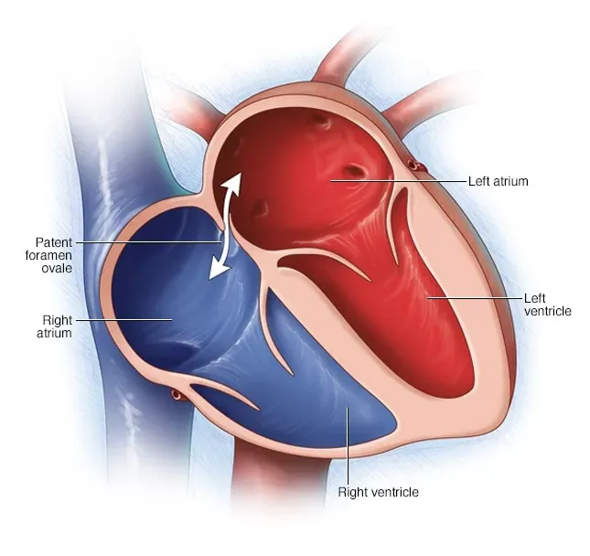
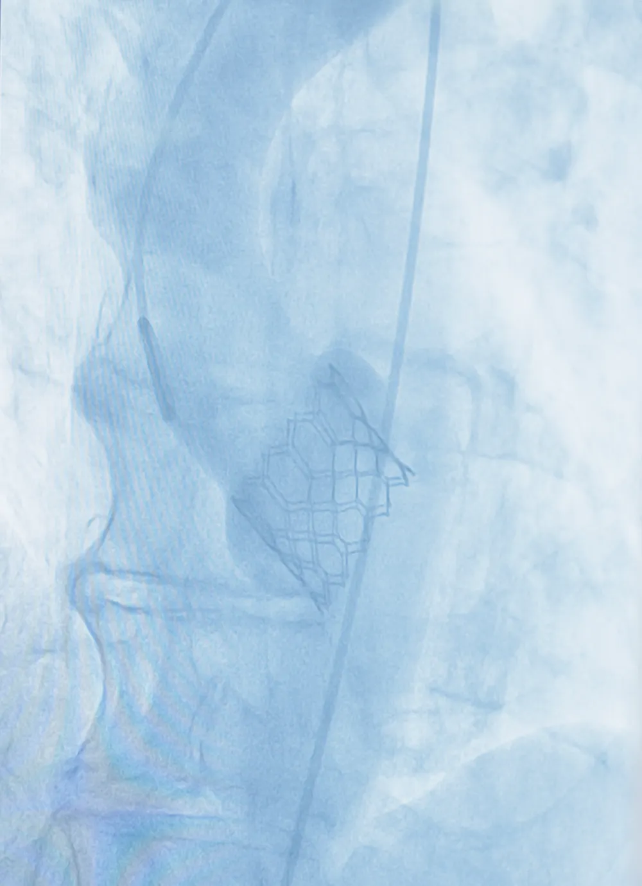

Publicações
Conteúdo técnico-científico sobre o coração.
Artigos da nossa equipe sobre procedimentos, exames e decisões em cardiologia intervencionista, em linguagem clara para pacientes e colegas.

EstruturaisMitos e verdades: forame oval patente (FOP). Preciso me preocupar?
Cerca de uma em cada quatro pessoas tem um forame oval patente e, para a maioria, ele é inofensivo. Separe os mitos das verdades e saiba quando o fechamento é indicado.
Ler artigo
ValvopatiasTAVI: o que é, para quem serve e como é feita a troca valvar sem cirurgia?
Quando a valva aórtica se estreita e endurece, o coração trabalha muito mais. Entenda a alternativa minimamente invasiva à cirurgia de peito aberto.
Ler artigoMitraClip e PASCAL (TEER): o que são? Para quem servem?
Cansaço, falta de ar e inchaço podem indicar insuficiência mitral. Conheça o reparo transcateter bordo a bordo, sem cirurgia de coração aberto.
Ler artigoReserva de fluxo fracionada (FFR): avaliando a real necessidade de tratar
Nem toda obstrução vista na angiografia limita o fluxo de forma crítica. Veja como medimos o impacto real de cada lesão e evitamos procedimentos desnecessários.
Ler artigoCateterismo cardíaco direito: a chave para entender a hipertensão pulmonar
Falta de ar, cansaço e inchaço podem indicar hipertensão pulmonar. Entenda o cateterismo direito, exame-chave para medir e classificar a doença.
Ler artigoCateterismo cardíaco e coronariografia: o que você precisa saber?
O que são o cateterismo cardíaco e a coronariografia, para quem são indicados e o que fazer com o resultado. Um guia claro e acessível.
Ler artigo